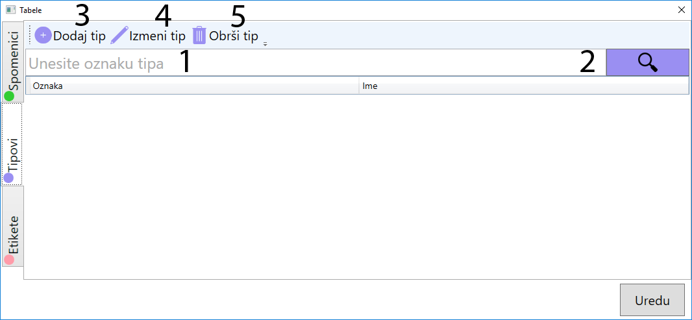

Tabela tipova spomenika
- Pretraga tipa spomenika po oznaci. Krenite da kucate ime i ako oznaka spomenika počinje na slova koja ste uneli biće prikazan u tabeli ispod (8)
- Dugme za pretragu
- Dijalog za novi tip spomenika
- Dijalog za menjanje izabranog tipa spomenika iz tabele (7).
- Briše se izabrani tip spomenika iz tabele (7).
